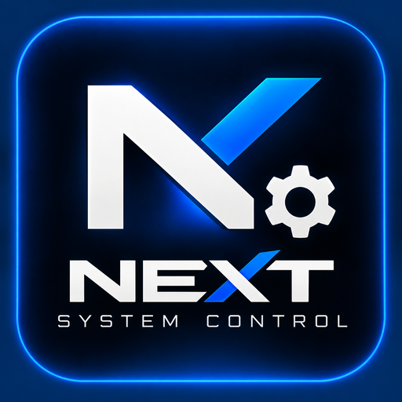

SSH & remote access
Authentication, command handling, stability testing, and useful diagnostics.
The official public development hub for NEXT System Control. Follow what is changing, what's being tested, and what's planned—directly from our public GitHub activity.

Priorities are editorial; they are not completion percentages or proof that a feature is stable.
Authentication, command handling, stability testing, and useful diagnostics.
Service isolation, intentional access controls, and safer filesystem workflows.
Crash breadcrumbs, log viewers, reports, and reproducible test evidence.
These counts and lists are fetched from GitHub when the page loads. They may be delayed or unavailable due to GitHub API limits; they do not measure functional completion.
Loading activity from GitHub…
Launch/exit stability, SSH and FTP separation, predictable navigation, and actionable logs.
Guided versus expert modes, safe update delivery, terminal utilities, and database groundwork.
Read-only firmware research, boot-state observation, persistence feasibility, and recovery safeguards.
Roadmap items are subject to change. Experimental features should not be treated as release-ready.
Want to help? Browse the code, read public issues, and share reproducible bug reports. Use only releases and tools appropriate for your firmware.